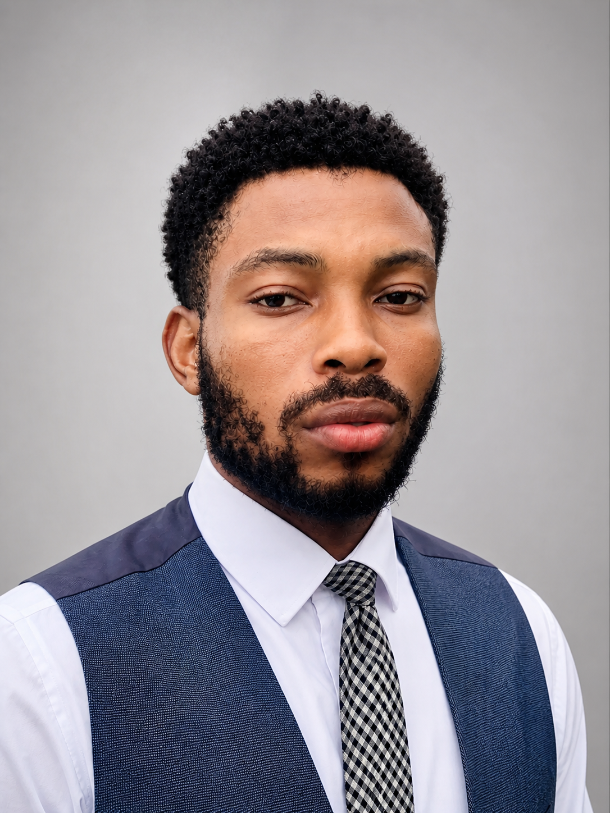

Why this mission began, and the values guiding it
Learn how Michael Attah turned his personal experience with barriers to education into a movement for hope, dignity, and opportunity for children across Africa.
A personal journey of transformation and purpose
Growing up in Nigeria, I witnessed firsthand how the lack of basic educational resources could limit a child's potential. Without proper school sandals, uniforms, or textbooks, many children I knew were forced to stay home, their dreams deferred by circumstances beyond their control.
These experiences shaped my understanding that education is not just about learning—it is about dignity, confidence, and the restoration of hope. When a child has the tools they need to attend school, they gain more than knowledge; they gain belief in their own potential.
Through BYU-Pathway, I discovered a world of possibilities. This program taught me that education is accessible, transformative, and deeply spiritual. It showed me how learning can change not just what you know, but who you become.
As a Marketing Analyst Trainee, I'm learning the skills needed to build sustainable impact. This training combines business acumen with purpose-driven work, showing me how to create real change in communities.
Studying ICT, Digital Marketing, and Technical Support has equipped me with the tools to amplify our mission. Technology can bridge gaps and connect supporters with the children who need them most.
Through Project Management studies and community involvement, I've learned that true leadership serves others. EduLift Africa is my way of giving back and creating opportunities for the next generation.
EduLift Africa is more than an initiative—it's my response to the struggles I witnessed and overcame. I believe that every African child deserves the same opportunities I now have. Through education, we can break cycles of poverty, restore dignity, and build a continent of empowered leaders.
My faith, education, and experiences have taught me that compassion combined with action can transform lives. This is why I wake up every day committed to this mission—to ensure that no child is left behind because of something as basic as lacking a school uniform or textbook.
"Education is the most powerful weapon which you can use to change the world." — Nelson Mandela
This quote resonates deeply with me. Education changed my world, and through EduLift Africa, I want to help change the world for countless African children.
"I envision a future where every African child has the opportunity to attend school, not because of charity, but because of their inherent right to education. Through EduLift Africa, we are building bridges of opportunity that will transform lives, communities, and ultimately, our continent."— Michael Attah, Founder & Visionary
We believe education is the most powerful tool for breaking cycles of poverty and creating sustainable change. Every child who receives school supplies gains more than materials—they gain hope, dignity, and the confidence to dream big.
Our approach is rooted in understanding local needs and building partnerships that last. We work hand-in-hand with communities to identify challenges and co-create solutions that address the real barriers children face.
EduLift Africa is committed to building systems that endure beyond individual donations. Through education, technology, and community empowerment, we create lasting change that multiplies impact over time.
The principles that guide everything we do
We approach every child with genuine care and understanding, recognizing that behind every need is a human story worthy of dignity and respect.
We believe education is a fundamental human right and the most powerful tool for creating lasting positive change in communities and lives.
We maintain the highest standards of honesty, transparency, and accountability in all our operations and relationships.
We work collaboratively with local communities, understanding that sustainable change comes from within, not from outside imposition.
We instill hope in children and communities, showing them that a better future is not just possible, but achievable through collective effort.
We develop servant leadership that empowers others, creating ripple effects of positive change throughout communities.
We serve with humility and dedication, recognizing that true impact comes from putting others' needs before our own.
We create and expand opportunities for children to access education, breaking down barriers and opening doors to brighter futures.
Words from the heart, for the children

"The best way to predict the future is to create it." — Peter Drucker
Together, we are creating a future where every African child has the opportunity to succeed.
Dear Precious Children of Africa,
I write this letter to you with a heart full of hope, love, and unwavering belief in your potential. You are the future of our great continent, and your dreams matter more than you can imagine.
Growing up, I witnessed firsthand how something as simple as lacking a school uniform or textbook could stand between a child and their education. I saw bright minds dimmed by circumstances, potential untapped because of barriers that should never exist. Those experiences ignited a fire in my soul—a commitment to ensure that no African child is left behind.
Through EduLift Africa, we are not just providing school supplies; we are restoring dignity, igniting hope, and opening doors to possibilities. Every uniform we provide says "You belong here." Every textbook we deliver declares "Your education matters." Every meal we help fund affirms "You are worthy of care."
But this is more than charity—it's justice. Education is your birthright, not a privilege to be earned. You deserve the tools, the environment, and the support to become the leaders, innovators, and change-makers Africa needs.
To our supporters and partners: Thank you for believing in this vision. Your generosity is transforming lives and building a better future. Together, we are proving that compassion combined with action can change the world.
To the children: Never doubt your worth or your potential. The same God who created the stars created you with purpose. Your story is just beginning, and it will be one of triumph, impact, and inspiration.
With unwavering hope and love,
Michael Attah
Founder & Visionary, EduLift Africa
Continue to the impact page for our roadmap, social proof, and contact details.
Go to ImpactGo back to the hero and mission overview to explore the core story again.
Back Home